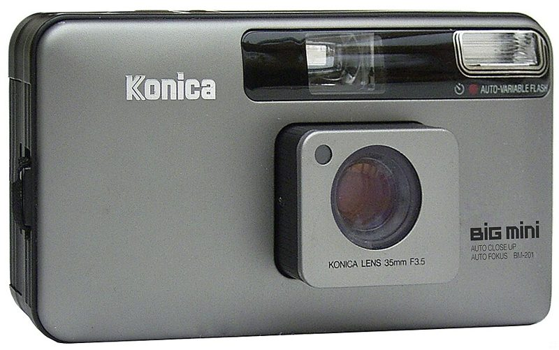
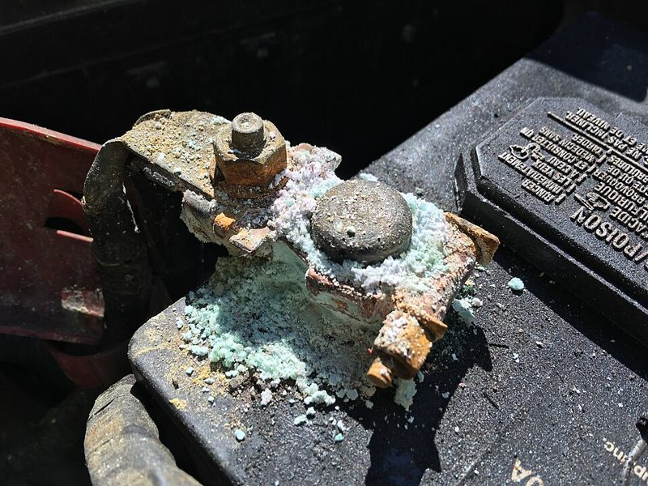

자동 똑딱이 Point & Shoot · 135
초점, 노출, 필름 감기까지 자동. 들고 다니며 일상을 찍기 좋습니다.
![Olympus μ[mju:]-II Zoom 80](../../photos/cam-ps.jpg)


어떻게 찍히나요
렌즈 앞의 센서가 거리를 재서 초점을 맞추고, 노출계가 밝기를 읽어 셔터 속도와 조리개를 정합니다. 필름을 넣으면 첫 컷까지 자동으로 감기고, 다 찍으면 알아서 되감습니다. 내가 할 일은 구도를 잡고 셔터를 누르는 것뿐입니다.
이런 분께 추천
- 필름이 처음이고 실패 없이 한 롤을 끝내고 싶은 분
- 여행·일상을 가볍게 기록하고 싶은 분
- 주머니에 넣고 다닐 카메라를 찾는 분
좋은 점과 아쉬운 점
- 좋은 점
- 가볍고 실패가 적음
- 아쉬운 점
- 인기 기종은 가격 거품, 고장 시 수리 어려움
대표 기종
Olympus μ[mju:]-II · Konica Big Mini · Contax T2 · Ricoh GR1
대략적인 가격
5만 ~ 70만 원
어울리는 필름
중고로 살 때 확인할 것
- 렌즈 덮개가 부드럽게 열리고 닫히는지
- 플래시가 터지는지, 액정에 컷 수가 표시되는지
- 배터리 칸의 부식(초록·흰 가루) 여부

배터리 단자 부식 예시(자동차 배터리). 카메라 배터리 칸에도 이런 초록·흰 가루가 생기며, 접점이 상하면 전원이 들어오지 않습니다.